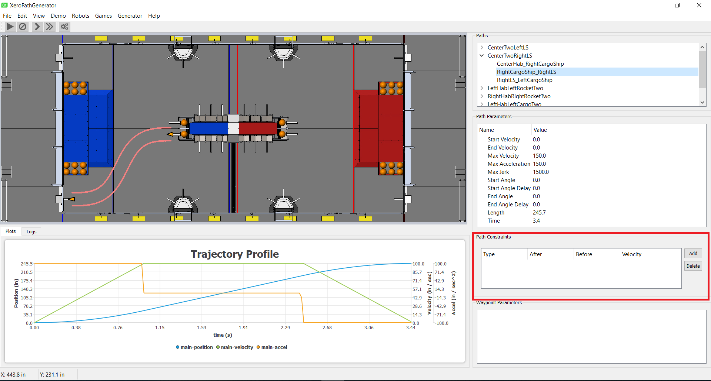

Constraints Window

The constraint window provides a way to add constraints to the current path.
Currently the only type of constraint is the ability to limit the velocity of
the path for portions of the path. The portion of the path is selected by an
“after” distance along the path and a “before” distance along the path. The
constraint is specified by the velocity given and is applied after the “after”
distance and before the “before” distance. Note, not all path generators can
process these constraints. If a path generator cannot honor the constraints,
the constraints window will not be active.